클릭 또는 Esc로 닫기
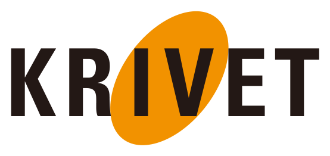
한국직업능력연구원 · KRIVET AI 활용 역량강화똑똑하던 AI가 갑자기 엉뚱해지는 데는, 두 가지 구조적 이유가 있습니다.
LLM은 '학습이 끝난 시점'까지만 세상을 압니다. 그 이후의 사건·도구·문법 변화는 모릅니다.
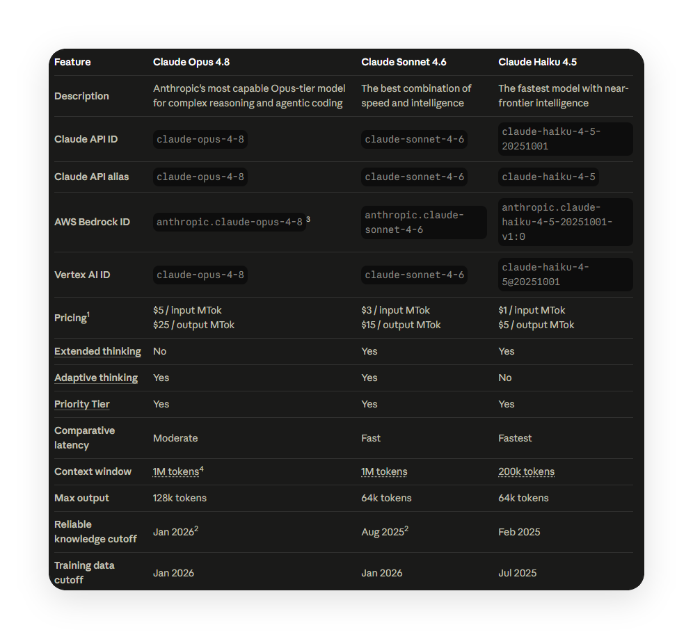
컨텍스트 윈도우는 모델이 '한 번에' 기억하는 작업 공간입니다.
한 세션이 길게 이어지면 이 공간이 넘쳐, 오래된 맥락이 밀려나고 엉뚱한 답을 내놓습니다.
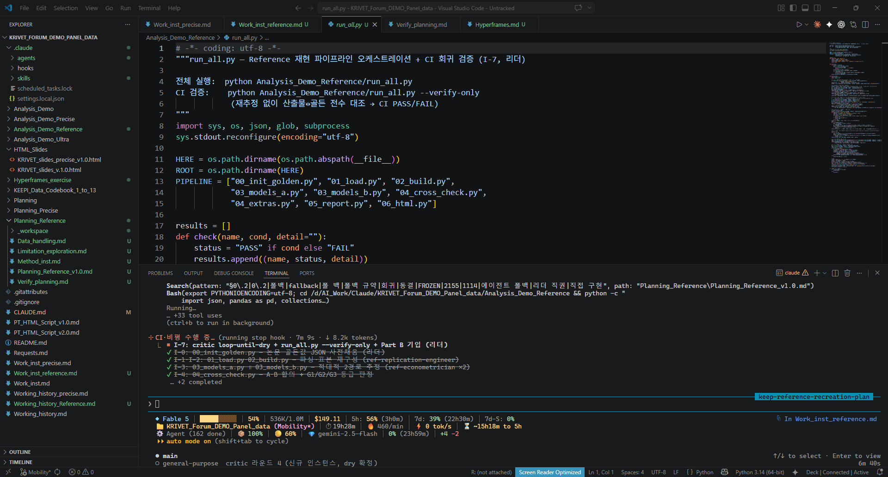
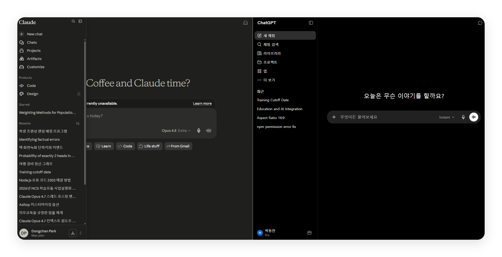
Claude · ChatGPT 모두 '최근(Recents)' 목록의 각 항목이 하나의 세션, 세션마다 컨텍스트 윈도우가 따로 주어집니다.
그래서 한 세션이 길어질수록 컨텍스트가 넘쳐, 할루시네이션 가능성이 커집니다.
LLM을 잘 쓰려면, 눈에 잘 안 보이는 세 가지 비용을 의식해야 합니다.
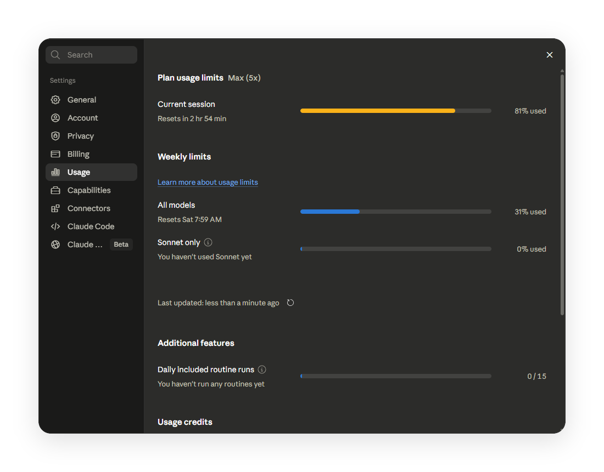
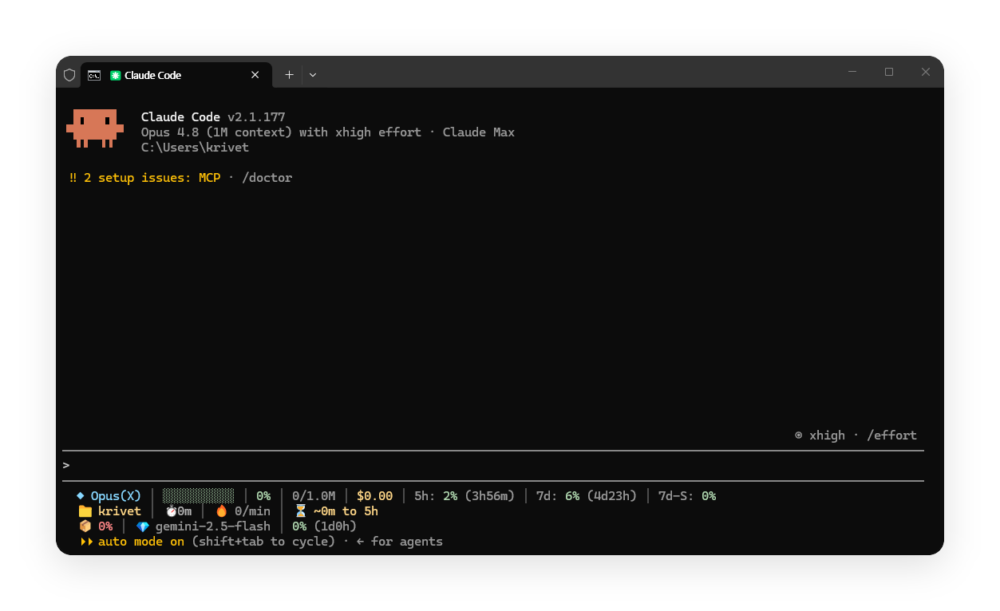
주요 LLM 모두 터미널에서 · 터미널로 쓰는 이 방식을 CLI (Command Line Interface) 라고 합니다.
설치만 끝나면, 이후엔 명령 한 줄이 전부입니다.
LLM은 언어모델입니다 · 잘 알아듣는 언어로 말해주면 됩니다.
요청 명확화 · 계획 · 검증 ... 이 모든 걸 어떻게 전달할까요?
정답은 의외로 단순합니다. LLM이 가장 잘 이해하는 형식, Markdown (.md)
사람도 읽기 쉽고, 기계도 구조를 정확히 이해합니다.
AI가 가장 잘 알아듣는, 구조가 살아있는 일반 텍스트입니다.
사람도 읽기 쉽고, AI도 문서 구조를 정확히 파악합니다.
연구에 LLM을 활용해, KEEP I 데이터로 네 가지 분석을 해봤습니다.
분석에 들어가기 전, 세 가지를 준비했습니다.
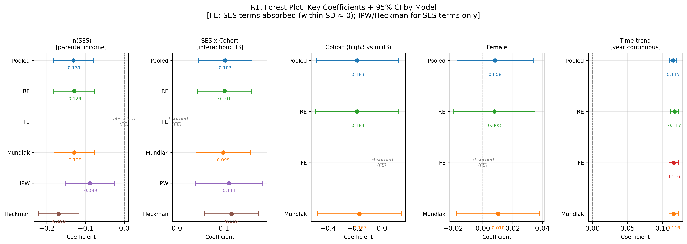
FE는 시간불변(2004년 1회 측정) SES를 흡수합니다. Mundlak · CRE로 그 효과를 되살립니다.
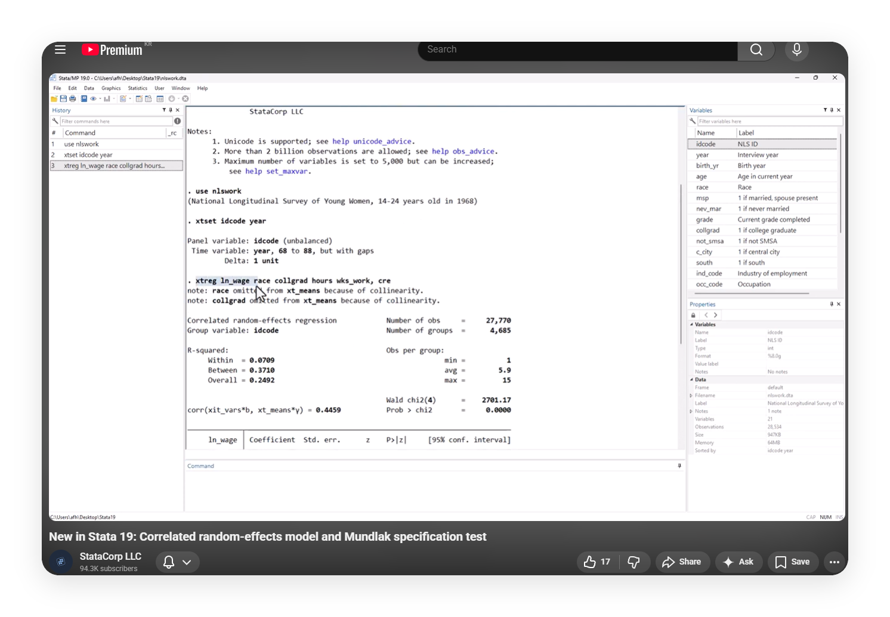
1~13차 원자료를 직접 결합해 불균형 종단패널을 구축했습니다.
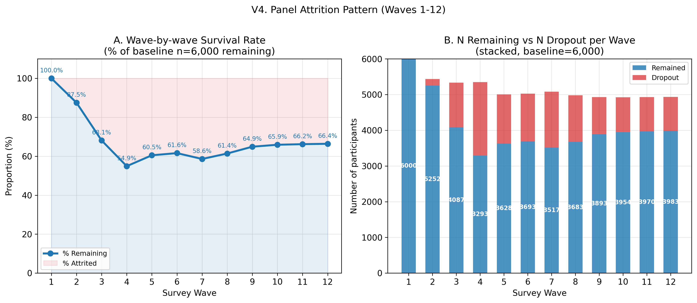
모델이 아니라 하네스로 '계산이 맞나'를 교차검증
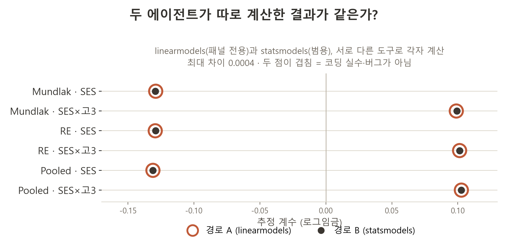
이번엔 Fable 5로 재현 (애석하게도 그는 갔습니다…)
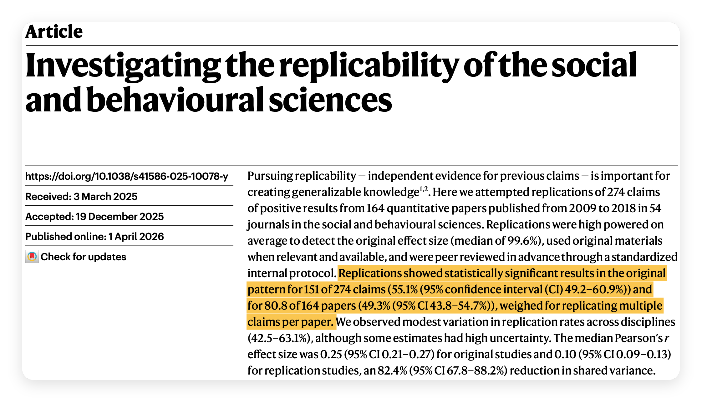
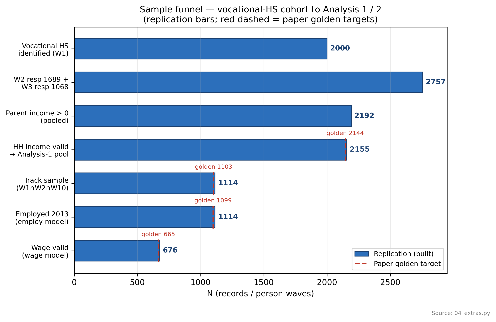
도구가 아무리 좋아도, 방향과 판단은 사람의 몫입니다.
Figure 3 · Claude does more per prompt for more expert users
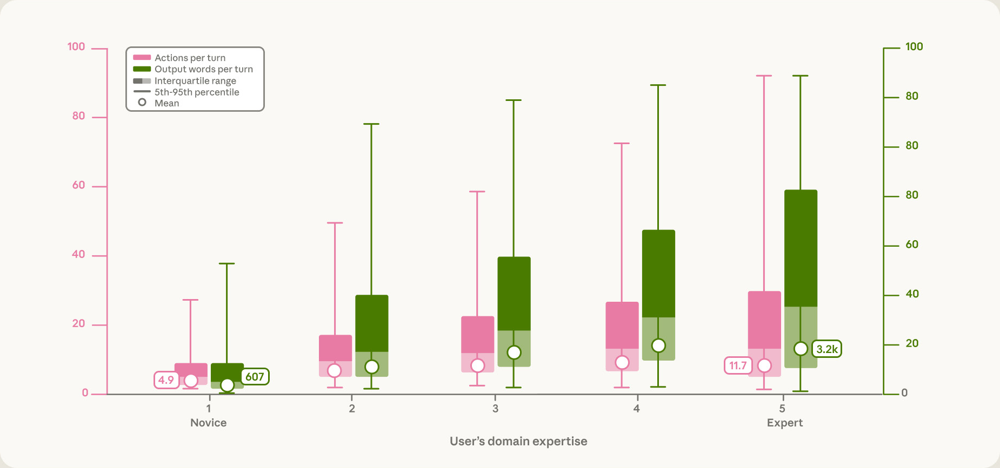
Figure 5 · Expertise and how sessions end
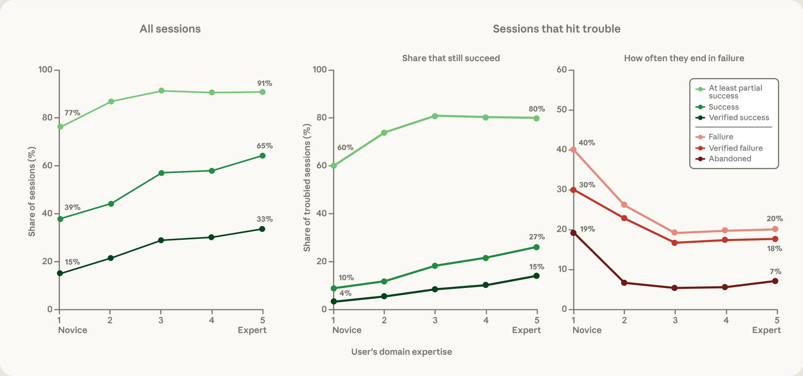
Figure 6 · Success rates in coding sessions by inferred occupation
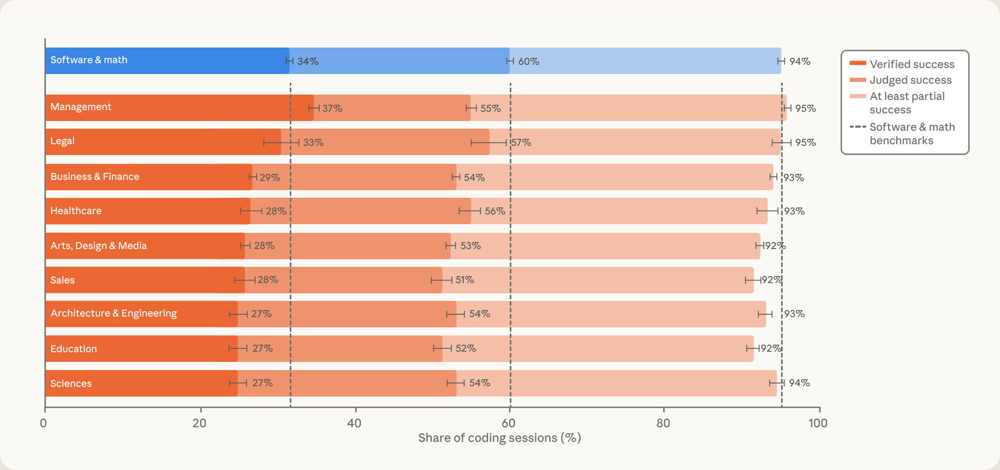
아니오. 모른다고 못 쓰는 게 아닙니다.